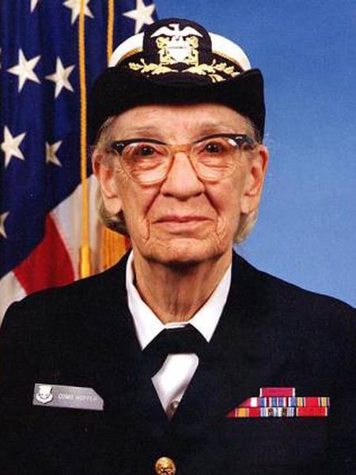
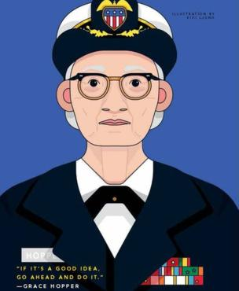

Grace Hopper
A mulher que tornou a linguagem do computador mais humana
Aqui está uma linha do tempo da vida do Dr.Borlang:
- 1906 - 9 de dezembro em Nova Iorque, Estados Unidos
- 1928 - a futura analista de sistemas se graduou em Matemática e Física.
- 1930 - Conclui seu mestrado na Universidade de Yale.
- 1931 - Começou Matemárica no Vassar.
- 1934 - também na Yale University, conquistou seu Ph.D. em Matemática
- 1934 - É publicada sua dissertação "Novos Critérios de Irredutibilidade".
- 1941 - promovida a professora assosiada.
- 1943 - Grace tirou uma licença de Vassar e foi empossada na Marinha dos Estados Unidos.
- 1944 - Formou-se como a primeira da turma e foi designada para Bureau of Ships Project da Harvard University como tenente júnior.
- 1949 - Tornou-se empregada da corporação Eckert-Mauchly Computer como matemática sénior e compôs a equipe de desenvolvimento UNIVAC I
- 1952 - Teve um compilador operacional. "Ninguém acreditava" disse Grace Hopper - " Eu tinha um compilador rodando e ninguém lhe tocava. ele me diziam que computadores apenas podiam fazer aritmética"
- 1954 - Foi nomeada a primeira diretora de programação automática, e seu departamento divulgou algumas das primeiras linguagens de programação baseadas em compilador, incluindo ARITH-MATIC, MATH-MATIC e FLOW-MATIC
- 1979 - Premio W.Wallace McDowell
- 1988 - Premio Emanuel R. Piore IEEE
- 1991 - Medalha Nacional de Tecnologia e Inovação
Leia mais sobre Grace Hopper.
